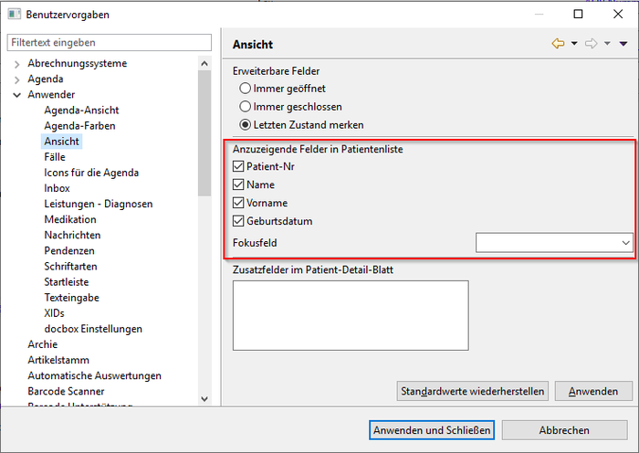

Patienten
Anforderungen
Für die View Patienten brauchen Sie lediglich den Elexis Kern. Für die Benutzung braucht es ansonsten keine weiteren Plugins.
Konfiguration
Die Einstellungen finden Sie unter Datei - Einstellungen - Anwender - Ansicht:

- Hiermit kann bestimmt werden, welche Felder für die Patientensuche zur Verfügung stehen.
- Das Fokusfeld ist das Feld, in dem der Mauszeiger beim Start von Elexis steht.
Einführung
Mithilfe der View Patienten haben Sie die Möglichkeit, Patienten zu erstellen und nach Ihnen zu suchen.
Patienten erstellen
In der folgenden Slideshow wird Schritt-für-Schritt erklärt, wie ein Patient erstellt wird.
weitere Funktionen
Personalien des ausgewählten Patienten als Einzeiler in die Zwischenablage kopieren
Die Personalien des ausgewählten Patienten werden als eine Zeile in die Zwischenablage kopiert.
Postanschrift, Fax und Email des ausgewählten Patienten in die Zwischenablage kopieren
Postanrschrift, Fax und Email des aktuell ausgewählten Patienten werden in die Zwischenablage kopiert.
Import von externen Daten
Covercard des Patienten kann über die Kartennummer oder über ein Kartenleser eingelesen werden. Weitere Datenquellen sind auch vorhanden.